Species Compendium
Table of contents
- Bandit
- Beanish
- Birdo
- Blizzard
- Blooper
- Bob-Omb
- Boo
- Broozer
- Bubble
- Bub-Ulb
- Bullet Bill
- Bully
- Bumpty
- Buzzy Beetle
- Cheep Cheep
- Chomp
- Chuck
- Chuckya
- Cleft
- Clubba
- Coffer
- Craw
- Dayzee
- Dino Rhino
- Doogan
- Duplighost
- Fuzzy
- Goomba
- Gulpit
- Human
- Jabbi
- Kong
- Koopa
- Koopa Bro
- Kremling
- Lakitu
- Lantern Ghost
- Magikoopa
- Monty Mole
- Nimbus
- Ninji
- Noki
- Outsider
- Pianta
- Piranha Plant
- Pokey
- Puff
- Puni
- Puppet
- Raven
- Rex
- Scuttlebug
- Shaman
- Shy Guy
- Smorg
- Snifit
- Siren
- Spinia
- Spirit
- Squeek
- Star
- Swooper
- Thwomp
- Toad
- Ukiki
- Whomp
- Wiggler
- Wizzerd
- X-Naut
- Yoshi
- Yux
While all the Species of the Mushroom Kingdom are wildly different, their advantages are roughly alike. A playable Species in Paper Story looks something like this:
Species Name
A description of the Species and how they fit into the world. These descriptions are simple and general, and do not define individual members of their Species.
Stat Modifiers
Base Power & DefensePros
The Skill Specialisations and other Traits that make denizens of that Species more capable.
Some Traits, like Immune, will be described in more detail like this.Cons
The Traits that a character of that Species have to deal with that are generally less desirable.
Some Traits, like Weakness, will be described in more detail like this.Other Traits
Any other qualities the species has that may not fit neatly into a Pro or a Con go here in one large block underneath Pros and Cons.
Most often this is for Species with a State Trait, which grants them contextual bonuses/penalties.Tech Defaults
Sets of Technique Traits a character of that Species can include when they start designing a Technique, without affecting its cost.
Multiple instances of a Trait are listed as "Trait x2", "Trait x3", and so on.
Each Technique can only benefit from one set of Tech Defaults without affecting its cost at a time.
Each set of Tech Defaults is set apart by colour and by line.Each Trait in a set is set apart by commas.Example Tech 1
Example Tech 2, 2nd part of Tech 2
Example Tech 3Any Required or Optional effects are listed underneath, and can (or must) be taken in addition to Tech Defaults.
Example Techniques
An example of a Technique a character of this Species might use, assuming they have 1 Power and not accounting for their level limit on negative Traits.
Includes potential outcomes and skills required for Primary and Secondary checks.Example (X FP)
Primary Check
Secondary Check
Includes potential outcomes and skills required for Primary and Secondary checks.
The traits used to make this Technique are shown hereExample (X FP)
Primary Check
Secondary Check
Includes potential outcomes and skills required for Primary and Secondary checks.
The traits used to make this Technique are shown here

Bandit
While not every Bandit is a thief, they have their name for a reason. Bandits tend towards more direct petty thievery, cons and trickery. A Bandit is more likely to smash-and-grab than to skulk around.
+1 Heart, +1 Spirit
1 Power, 0 DefensePros
+ Athletics (Run)
+ Notice (Tricks)
+ Trickery (Theft)Cons
N/ATech Defaults
Disarm x2
Snatch
Overrun
Variant (Trickery)Example Techniques
Barging Theft (0 FP)
Slams the enemy and steals one of their Tools, Disarming them.
Coordination:
Nice!: 1 DMG
Good!: 2 DMG
Trickery (+ Theft):
Nice!: Disarm Tool (1) for 4 turns
Good!: Disarm Tool (2) for 4 turns
Great!: Disarm Tool (3) for 4 turns
Wonderful!: Disarm Tool (4) for 4 turns
Disarm (Tool) x4, UnwieldyCunning Poison (4 FP)
Sneakily delivers a poison attack, dealing Lingering damage for 5 turns. Trickery:
Nice!: Lingering (2) for 5 turns
Good!: Lingering (3) for 5 turns
Great!: Lingering (4) for 5 turns
Wonderful!: Lingering (5) for 5 turns
Variant (Trickery), Empower, Lingering x5, Harmless

Beanish
Hailing from the Beanbean Kingdom, Beanish are a rare sight abroad. Their quick wits and good humour make them reliable and likable allies. On the other hand, they tend to be more self-centred than their mushroom neighbours, and they count a few rogues among their number.
+2 Spirit or +1 Spirit, +1 Courage
1 Power, 0 DefensePros
+ Craft (Beans)
+ Knowhow (Any)
+ Cheer (Comedy)Cons
N/ATech Defaults
Boost (Any)
Flowery
Shared
ToolOptional: Split on Flowery Techniques
Example Techniques
Chuckle Charge (0 FP)
Distractedly rams the enemy while laughing. Invigorates the user to restore FP.
Coordination:
Nice!: 1 DMG
Good!: 2 DMG
Cheer (+ Comedy):
Nice!: +1 FP
Good!: +2 FP
Flowery x2, Split, UnwieldyLaugh It Off (4 FP)
Cracks a joke about the enemy, helping to boost morale for the user and their allies.
Cheer (+ Comedy):
Good!: +1 Attack and +1 Defense for 3 turns
Great!: +2 Attack and +2 Defense for 3 turns
Boost (Attack) x2, Allies, Boost (Defense) x2, Lengthen, Harmless (Indirect), Unwieldy

Birdo
Birdos are strange dinosaurs from distant lands with the ability to shoot eggs – and other objects – from their snout. Brawny and quick-witted, these excitable creatures excel wherever they're found.
+1 Heart, +1 Spirit
1 Power, 0 DefensePros
+ Aim (Shoot)
+ Athletics (Brawn)
+ Notice (Scent)
Immune (Charm)
CarrierCons
Weakness (Scent)
The Level and Duration of all Statuses you suffer from scent-based sources are doubled.Tech Defaults
Ranged
Launch
Provoke x2
ThrowOptional: Element (Blast) on Ranged attacks
Example Techniques
Egg Shot (0 FP)
Blasts an enemy with an explosive egg attack.
Aim (+ Shoot):
Auto: 1 Blast DMG
Nice!: 2 Blast DMG
Ranged, Element (Blast)Snout Shooter (5 FP)
Swallow an enemy in melee, then spit them out at another target at range. Both targets take damage.
Aim (+ Shoot):
Auto: 1 DMG
Nice!: 2 DMG
Good!: 4 DMG
Great!: 6 DMG
Throw x2, Scaling
Blizzard
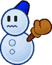
Blizzards (formally, Mr Blizzards) are enchanted snow sculptures, which can spring up from the snow on their own or else be made by other Blizzards. Just getting around can be a little awkward for them, and hot weather is always a concern, but they're brimming with enthusiasm for life.
+1 Heart, +1 Spirit
1 Power, 0 DefensePros
+ Aim (Throw)
+ Athletics (Jump)
+ Crafts (Snow)
Immune (Ice)
1 Resist (Water)
Construct (Lifelike)Cons
Weakness (Disorient)
The Level and Duration of any Disorientation inflicted on you is doubled.
Weakness (Fire)
You take double damage. If this Technique wouldn't usually deal damage, it deals 2 Piercing damage.
Your Attack is Weakened (1) for a number of turns equal to the damage taken.Tech Defaults
Aerial
Daze x2
Ranged
Terrain (Snow)Optional: Element (Ice) on Daze or Ranged attacks
Example Techniques
Snowball Lob (0 FP)
Lobs a snowball in an overhead arc.
Aim (+ Throw):
Auto: 1 DMG
Nice!: 2 DMG
Element (Ice), RangedSnow Storm (3 FP)
Whips up a freezing blast of wind, attempting to freeze the enemy group. Coordination:
Nice!: 2 Air & Ice DMG
Good!: 4 Air & Ice DMG
Bully:
Good!: Daze (1) for 2 turns
Great!: Daze (2) for 2 turns
Daze x2, Element (Ice), Element (Air), Group (Indirect), Strong, Unwieldy x2
Blooper
Bloopers are equally adept in the air and underwater, though they're more comfortable swimming. They're not picky about where they swim, though the larger area the better, as with enough time they can grow to huge sizes.
+2 Spirit
1 Power, 0 DefensePros
+ Athletics (Swim)
+ Notice (Underwater)
+ Trickery (Deception)
1 Resist (Shock, Water)
Aquatic
Carrier (In Water)
HoverCons
N/ATech Defaults
Counter
Disorient
Ranged
StunOptional: Element (Shock) on Counter or Stun Techniques, or Element (Water) on Disorient or Ranged Techniques
Example Techniques
Ink Cloud (0 FP)
Blasts an enemy in melee with an inky water jet.
Coordination:
Nice!: 1 Water DMG
Good!: 2 Water DMG
Trickery (+ Deception):
Nice!: Disorient (1) for 1 turn
Disorient, Element (Water), Indirect, UnwieldyElectric Sheen (3 FP)
You generate static electricity, punishing melee attackers. Steady:
Gain Contact trait for 1 turn for each Grade of Success, with the following effect:
Nice!: 2 Piercing Shock DMG
Good!: 4 Piercing Shock DMG
Bully:
Good!: Daze (1) for 3 turns
Great!: Daze (2) for 3 turns
Wonderful!: Daze (3) for 3 turns
Counter, Element (Shock), Piercing, Daze x3, Strong, Self, Unwieldy x2
Bob-Omb
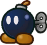
Bob-Ombs are demolitions experts. As much as it confuses people, Bob-Ombs suffer no ill effects from blowing themselves up, and many seem to relish the act. Despite this they are rarely violent and often even-tempered.
+1 Heart, +1 Spirit
1 Power, 1 DefensePros
+ Athletics (Explode)
+ Crafts (Demolition)
or + Crafts (Explosives)
+ Crafts (Repairs)
Immune (Poison)
1 Resist (Ice)
Construct (Lifelike)Cons
Weakness (Blast, Fire)
You take +2 damage and detonate harmlessly, leaving you completely Stunned (6) for the next 2 turns.
HandlessTech Defaults
Burst
Indirect
Ranged
ScalingOptional: Element (Blast) on attacks, or Element (Blast) and Variant (Athletics - Primary Only) on Indirect attacks
Example Techniques
Quick Blast (0 FP)
Quickly detonates to blast foes away.
Athletics (+Explode):
Nice!: 4 DMG
Element (Blast), Indirect, Variant (Athletics), Strong, CommitmentBob-Ombast (8 FP)
A powerful explosion that blasts everything away – including your allies.
Athletics (+Explode):
Auto: 2 DMG
Nice!: 4 DMG
Good!: 6 DMG
Great!: 8 DMG
Wonderful!: 10 DMG
Excellent!: 12 DMG
Element (Blast), Scaling x2, Variant (Athletics), All (Indirect), Strong
Boo
The origins of Boos are shrouded in mystery. What is known for sure though is they're ghosts with a penchant for trickery. While most are reclusive, few Boos can resist a good scare.
+2 Spirit
1 Power, 0 DefensePros
+ Trickery (Dodge)
+ Knowhow (Lore)
+ Bully (Surprises)
Immune (Fear, Poison)
Immune (Shadow)
You recover HP equal to the attack's damage (minimum 1 HP).
If there's any excess HP, your Attack is Boosted (1) for a number of turns equal to the excess HP.
Clone (Illusions)
Hover
Fly
Intangibility
Invisibility
Undead (Lifelike)Cons
Weakness (Life Magic, Sudden Light, Stars)
Any HP you would normally recover is treated as damage instead; then, you take double damage.
If this Technique wouldn't usually deal damage, it deals 2 Piercing damage.
You're left Dazed (1) for a number of turns equal to the damage taken.Tech Defaults
Boost (Dodge)
Element (Shadow)
Fear x2
Secure (Intangible)Optional: Element (Shadow) on Indirect or Ranged Techniques
Example Techniques
Frightening Smack (0 FP)
A spooky backhand terrifies the foe, causing them to either flee or cower in fear.
Coordination:
Nice!: 1 DMG
Good!: 2 DMG
Bully (+Surprises):
Nice!: Stun (1) for 4 turns
Good!: Stun (2) for 4 turns
Great!: Stun (3) for 4 turns
Wonderful!: Stun (4) for 4 turns
Fear x4, UnwieldyOutta Sight (0 FP)
Hides you and your allies away from attacks.
Trickery (+Evade):
Nice!: Become Secure for one turn.
Secure, Allies, Harmless

Broozer
Like their Boo cousins, Broozers are reclusive, mysterious ethereal beings. Unlike them, they're largely aggressive and confrontational, and would rather clobber intruders than enjoy a good scare. Despite this, most Boo enclaves recognise how useful a Broozer bouncer can be.
1 Heart, +1 Spirit
1 Power, 0 DefensePros
+ Athletics (Brawn)
+ Trickery (Dodge)
+ Bully (Shove)
Immune (Charm, Fear, Poison)
Immune (Shadow) You recover HP equal to the attack's raw damage (minimum 1 HP).
If there's any excess HP, your Attack is Boosted (1) for a number of turns equal to the excess HP.
Invisibility
Undead (Lifelike)Cons
Weakness (Confuse, Provoke)
The Level and Duration of any of these Statuses inflicted on you is doubled.
Weakness (Life Magic, Sudden Light, Stars)
Any HP you would normally recover is treated as damage instead; then, you take double damage.
If this Technique wouldn't usually deal damage, it deals 2 Piercing damage.
You're left Dazed (1) for a number of turns equal to the damage taken.Tech Defaults
Boost (Attack)
Element (Shadow)
Sequential
StrongOptional: Element (Shadow) on Indirect or Ranged attacks
Example Techniques
Whirlwind Fists (0 FP)
Rushes the enemy while spinning their fists.
Coordination:
Good!: 4 DMG; attacks 1 more target behind the first for each additional Grade of Success.
Sequential, Strong, UnwieldyPower-Up Punch (3 FP)
Winds up a punch, then smacks the foe; Attack is boosted afterwards from the workout, but cools down quickly.
Coordination:
Good!: 6 DMG
Athletics (+ Brawn):
Nice!: +1 Attack for 1 turn
Good!: +2 Attack for 1 turn
Great!: +3 Attack for 1 turn
Boost (Attack) x3, Split, Strong x2, Commitment (Primary), Shorten x2, Unwieldy

Bubble
Also known as Podoboos or Embers, Bubbles are frightful spirits of flame – though exactly how fearsome they appear will vary from person to person, or Bubble to Bubble. In between this and their fiery nature they're rarely welcomed into society, but their magical power is undeniable and must be respected.
+2 Spirit
1 Power, 0 DefensePros
+ Magic (Fire)
+ Magic (Illusion)
+ Bully (Surprises)
Immune (Charm, Fear, Poison)
Immune (Fire, Shadow)
You recover HP equal to the attack's raw damage (minimum 1 HP).
If there's any excess HP, your Attack is Boosted (1) for a number of turns equal to the excess HP.
Contact
The attacker takes 1 Piercing Fire DMG, and you make a Steady check; the attacker suffers a Lingering (1) burn for 1 turn for each Grade of Success.
Clone (Copies, Illusions)
Efficient (Fire)
Fly
Hover
Undead (Lifelike)Cons
Weakness (Blast, Ice, Life Magic, Stars, Water)
Any HP you would normally recover is treated as damage instead; then, you take double damage.
If this Technique wouldn't usually deal damage, it deals 2 Piercing damage.
Ice and Water effects douse your flames, causing your Attack to be Weakened (1) for a number of turns equal to the damage taken.
Other effects instead leave you Dazed (1) for a number of turns equal to the damage taken.
HandlessTech Defaults
Element (Fire)
Fear x2
Lingering x2
RangedOptional: Element (Fire) on attack or Lingering Techniques
Example Techniques
Charcoal Charge (0 FP)
A blazing tackle attack.
Coordination:
Auto: 1 Fire DMG
Nice!: 2 Fire DMG
Magic (+ Fire):
Nice!: Lingering (1) for 2 turns
Good!: Lingering (2) for 2 turns
Lingering x2, Element (Fire)Dread Mirage (4 FP)
Conjures a terrifying visage to scare off a group of foes, causing them to either flee or cower in fear.
Magic (+ Illusion):
Nice!: Stun (1) for 2 turns
Good!: Stun (2) for 2 turns
Fear x2, Group, Variant (Magic), Harmless

Bub-Ulb
Bub-Ulbs are living flowers who take great pride in their own appearance and the gardens they care for. Most often they stay buried underground, but keep an awareness of their surroundings through their flowers.
+1 Heart, +1 Courage
1 Power, 0 DefensePros
+ Athletics (Burrowing)
+ Crafts (Gardening)
or + Knowhow (Gardening)
+ Cheer (FP)
Immune (Water)
You heal 5 HP instead.
1 Resist (Earth, Shock)
Elevation
Requires elevated earth to burrow into.Cons
Weakness (Fire)
You take +2 damage and suffer from a Lingering burn, lasting a number of turns equal to the damage taken.
Weakness (Quake)
Has no effect unless you're currently underground.
If you're currently underground, you're forced to the surface, dealing +2 damage and completely Stunning (6) you for the next turn.Tech Defaults
Flowery
Secure (Burrowed)
Terrain (Overgrown)
UnderfootOptional: Split on Flowery Techniques
Optional: Element (Earth) on melee attacks*{: .alt-grey-line }Example Techniques
Petal Swipe (0 FP)
A swipe with their flowering head scatters petals at the enemy while restoring some of their own FP.
Coordination:
Nice!: 1 Earth DMG
Good!: 2 Earth DMG
Cheer (+ FP):
Nice!: +1 FP
Good!: +2 FP
Element (Earth), Flowery x2, Split, UnwieldyHedge Hammer (5 FP)
Causes a large hedge to pop up from the ground, striking everyone in the enemy group from underneath and splitting them into two groups. Fails against hovering or flying enemies.
Crafts (+ Gardening):
Nice!: 2 Earth Quake DMG
Good!: 4 Earth Quake DMG
Trickery:
Nice!: Splits the enemy group into two groups for 2 turns.
Underfoot, Divider, Lengthen, Strong, Variant (Crafts), Unwieldy
Bullet Bill
Originally manufactured to be intelligent, relentless weapons, Bullet Bills pursue their goals with single-minded dedication; in peace-time, things get a little more complicated for them.
Bullet Bills tend to look out for one another in the field with triage repairs, and this camaraderie is often extended to their friends and allies.+1 Heart, +1 Courage
1 Power, 1 DefensePros
+ Athletics (Flight)
+Crafts (Repairs)
+ Bully (Shove)
Immune (Poison)
1 Resist (Ice)
Construct (Lifelike)
FlyCons
Weakness (Blast, Fire)
You take +2 damage and detonate harmlessly, leaving you completely Stunned (6) for the next 2 turns.Tech Defaults
Aerial
Burst
Scaling
Strike-ThroughOptional: Element (Blast) on melee attacks
Example Techniques
Bombard (0 FP)
Crash into the enemy from above like a mortar.
Athletics (+ Flight):
Nice!: 3 Blast DMG
Good!: 6 Blast DMG
Can only be used while flying. You stop flying afterwards.
Aerial, Element (Blast), Strong, Situational (Plummet Only)Wrecking Calibre (2 FP)
Smashes into the enemy with a wreckless explosion.
You lose HP equal to ½ this attack's DMG.
Athletics (+ Flight):
Nice!: 3 Blast DMG
Good!: 6 Blast DMG
Great!: 8 Blast DMG
Wonderful!: 10 Blast DMG
Excellent!: 12 Blast DMG
Unbelievable!: 14 Blast DMG
Element (Blast), Scaling x2, Strong x2, Variant (Athletics), Blowback, Unwieldy
Bully
Stubborn and territorial metal-clad brutes, it's said that the only thing harder to budge than a Bully is a Bully's opinion. When they find allies they can trust, they make for stalwart guardians – but most often, Bullies are a nuisance to others around them.
+1 Heart, +1 Courage
1 Power, 1 DefensePros
+ Athletics (Brawn)
+ Bully (Shove)
+ Steady (Poise)
Immune (Charm, Poison)
1 Resist (Blast, Fire, Ice)
Construct (Lifelike)
SinkerCons
Weakness (Confuse, Provoke)
The Level and Duration of any of these Statuses inflicted on you is doubled.
HandlessTech Defaults
Launch
Overrun
Provoke x2
StrongExample Techniques
Standing Bonk (0 FP)
Smashes a tough metal head into the enemy.
Coordination:
Nice!: 3 DMG
Good!: 6 DMG
Strong x2, UnwieldyDomino Charge (5 FP)
Rushes into all enemies in the target group in melee range, pinning them and slamming them into other targets.
Athletics (+ Brawn):
Good!: 3 DMG
Great!: 6 DMG
Bully (+ Shove):
Good!: Launch each target into the target behind them, dealing 3 DMG to each new target. For each additional Grade of Success, launched targets hit one more enemy.
Can launch up to 3 targets at once.
Launch x3, Overrun, Strong x2, Variant (Athletics), Unwieldy x3

Bumpty
Concept by @tact.elive
Short and stout penguins found mostly in the kingdom's colder climates. Though small and generally harmless, their rubbery feathers hold a hard-to-move, yet hard-moving force+1 Heart, +1 Courage
1 Power, 1 DefensePros
+ Athletics (Bump)
+ Guard (Melee)
+ Steady (Poise)
Immune (Ice, Shock)
1 Resist (Water)
AquaticCons
Weakness (Fire)
You take +2 damage and become Dazed (1) for a number of turns equal to the damage taken.Tech Defaults
Boost (Steady)
Element (Ice)
Launch
ThrowOptional: Element (Ice) on Indirect or Ranged Techniques
Example Techniques
Bum-Rush (0 FP)
Run into a foe, sending them flying backwards!
Coordination:
Auto: 1 DMG
Nice!: 2 DMG
Athletics (+ Bump):
For each Grade of Success, launch the foe into one target behind them, dealing 1 DMG to each.
LaunchCozy Bundle (3 FP)
Wrap a target in a warm downy quilt, making them feel more secure for 4 turns.
Cheer:
Nice!: +1d6 to Steady for 4 turns
Good!: +2d6 to Steady for 4 turns
Great!: +3d6 to Steady for 4 turns
Wonderful!: +4d6 to Steady for 4 turns
Boost (Steady) x4, Harmless (Indirect)
Buzzy Beetle
Buzzy Beetles are similar to Koopas, but less athletic, less sociable and far sturdier. They can often be found climbing around in dark caves, and despite their defensive prowess, tend to avoid direct confrontation.
+1 Heart
1 Power, 2 DefensePros
+ Athletics (Climb)
+ Athletics (Shells)
+ Notice (Vibrations)
Immune (Blast, Fire)Cons
Weakness (Aerial, Quake)
You are flipped over; you retain your Defense against Aerial attacks initially, but otherwise your Defense is negated for the duration.
This leaves you completely Stunned (6) for the next 2 turns.
HandlessTech Defaults
Boost (Defense)
Counter
Indirect
OverrunOptional: Variant (Athletics - Primary Only) on Indirect attacks
Example Techniques
Shell Spin (0 FP)
Hits one target in melee with a shell strike.
Athletics (+ Shells):
Auto: 1 DMG
Nice!: 2 DMG
Indirect, Variant (Athletics)Power Shell (3 FP)
Spin through all enemies on the ground with a shell strike.
Athletics (+ Shells):
Auto: 1 DMG
Nice!: 2 DMG
Indirect, Variant (Athletics), Overrun
Cheep Cheep
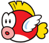
While they excel in water, Cheep Cheep have great acrobatic skills too; though they dislike spending much time on land. They can expel water with considerable force, either to attack or as a deterrant.
+1 Heart, +1 Spirit
1 Power, 0 DefensePros
+ Athletics (Jump)
+ Athletics (Swim)
+ Notice (Underwater)
1 Resist (Fire, Water)
Aquatic
Carrier (In Water)Cons
Weakness (Shock)
You take +2 damage and become Dazed (1) for a number of turns equal to the damage taken.
HandlessTech Defaults
Aerial
Element (Water)
Ranged
Weaken (Any)Optional: Element (Water) on Indirect or Ranged Techniques
Example Techniques
Belly Flop (0 FP)
Flops onto the enemy from above.
Athletics (+ Jump):
Auto: 1 DMG
Nice!: 2 DMG
AerialDrench (5 FP)
Softens the foe up with water, weakening their Attack and Defense. Bully:
Good!: -1 Attack, -1 Defense, for 3 turns
Great!: -2 Attack, -2 Defense, for 3 turns
Wonderful!: -3 Attack, -3 Defense, for 3 turns
Weaken (Attack) x3, Element (Water), Weaken (Defense) x3, Harmless (Indirect), Unwieldy
Chomp
Chomps are terrifying beasts to behold; wild, reckless and virtually impossible to calm down. It's possible they could communicate and live peacefully, but they seem to prefer barking and biting at anything that moves.
+2 Heart, -1 Spirit
2 Power, 1 DefensePros
+ Athletics (Brawn)
+ Athletics (Jump)
+ Bully (Bark)
2 Resist (Blast, Fire, Ice)
Immune (Poison)
Carrier
SinkerCons
Weakness (Charm, Confuse, Provoke)
The Level and Duration of any of these Statuses inflicted on you is doubled.
HandlessTech Defaults
Aerial
Fear x2
Strike-Through x2
StrongRequired: Unwieldy (Primary) on attack
Example Techniques
Power Chomp (0 FP)
Crunches the foe with powerful jaws.
Coordination:
Nice!: 3 DMG
Good!: 6 DMG
Strong, UnwieldyRolling Boulder (4 FP)
Rolls into melee and bowls enemies over, one by one, hitting up to 4 targets. Strikes get weaker after each target.
Athletics (+ Brawn):
Good!: 3 DMG / 2 DMG / 1 DMG / 1 DMG
Great!: 6 DMG / 5 DMG / 4 DMG / 3 DMG
Strong x2, Strike-Through x3, Variant (Athletics), Unwieldy x2
Chuck
Tough Koopas who primarily fixate on athletic ability, especially sports. When they're rallied to a cause, they're known for great brawn and unwavering faith in their allies – treating them like their favourite sports team.
+2 Heart or +1 Heart, +1 Courage
1 Power, 0 DefensePros
+ Athletics (Any)
or + Aim (Throw)
+ Athletics (Run)
+ Cheer (Team)
Immune (Fear)Cons
Weakness (Confuse, Provoke)
The Level and Duration of any of these Statuses inflicted on you is doubled.Tech Defaults
Aerial
Overrun
Tool
LaunchOptional: Variant (Athletics on Techniques that use an Athletics specialisation
Example Techniques
Football Toss (0 FP)
Hurls a trusty football into the enemy.
Aim:
Nice!: 2 DMG
Good!: 4 DMG
Tool (Ranged), Strong, UnwieldyEndzone Charge (2 FP)
Shoulder-charges straight through all enemies in front of them. Athletics (+ Run):
Nice!: 3 DMG
Good!: 6 DMG
Overrun, Variant (Athletics), Strong x2, Unwieldy

Chuckya
Hefty clockwork automatons, capable of lifting great weights and throwing them around like they're nothing.
Chuckyas are complex machines, but are fundamentally similar to Bob-Ombs in design. They tend to take silent pride in their work, but have the same spark of life.+2 Heart
1 Power, 1 DefensePros
+ Athletics (Brawn)
+ Aim (Throw)
+ Bully (Grapple)
Immune (Poison)
1 Resist (Blast, Fire, Ice)
Construct (Lifelike)
SinkerCons
Weakness (Shock, Water)
You take +2 damage and become Confused (1) for a number of turns equal to the damage taken.Tech Defaults
Disorient
Snatch
Strong
ThrowExample Techniques
Go-Long Throw (0 FP)
Grabs onto the enemy, then tosses them into another target at range. Both targets take damage.
Athletics (+ Brawn):
Good!: 4 DMG
Throw x2, Strong, Commitment (Primary), UnwieldyRoundabout Toss (4 FP)
Grabs onto the foe, spins them about then tosses them into the closest enemy. Both targets take damage, and the thrown enemy is left dizzy. Athletics (+ Brawn):
Good!: 4 DMG
Bully (+ Grapple):
Nice!: Disorient (1) for 3 turns
Good!: Disorient (2) for 3 turns
Great!: Disorient (3) for 3 turns
Throw, Disorient x3, Strong, Commitment (Primary), Unwieldy

Cleft
Clefts are truly stoic creatures, made almost entirely of solid stone and virtually indistinguishable from ordinary rocks. They're resilient in the face of most attacks, making them reliable defenders.
+1 Heart
1 Power, 2 DefensePros
+ Guard (Melee)
+ Trickery (Camouflage)
+ Steady (Poise)
Immune (Fire, Poison)
1 Resist (Earth, Shock)
SinkerCons
Handless
Weakness (Aerial, Blast, Quake)
You are flipped over; you retain your Defense against Aerial and Blast attacks initially, but otherwise your Defense is negated for the duration.
This leaves you completely Stunned (6) for the next 2 turns.Tech Defaults
Boost (Attack/Defense)
Overrun
Quake
UnderfootExample Techniques
Earthshaker (0 FP)
You pound the ground with force, affecting all enemies in contact with the ground, wall or ceiling.
Athletics:
Auto: 1 Quake DMG
Nice!: 2 Quake DMG
QuakeStone Lunge (2 FP)
You barge at the enemy while tucking into a safe stone-like stance, protecting you from attacks until your next turn.
Coordination:
Nice!: 3 DMG
Good!: 6 DMG
Guard:
Good!: +2 Defense for 1 turn
Boost (Defense) x2, Strong x2, Split, Unwieldy x2, Shorten

Clubba
Sometimes known as Spikes, Clubbas are renowned for their strength and ability with all manner of spiky tools.
While they tend to be easy-going, their keen senses have served them well as guards.+2 Heart
1 Power, 0 DefensePros
+ Aim (Throw)
+ Coordination (Weapon)
+ Notice (Listen)
Immune (Provoke)Cons
Weakness (Sleep)
The Level and Duration of all Statuses you suffer associated with sleep are doubled.Tech Defaults
Daze x2
Strong, Tool (Indirect)
Strike-Through x2, Tool (Ranged)
QuakeExample Techniques
Clubba Swing (0 FP)
Slams an enemy in melee with a heavy club, dealing incredible damage – if it hits.
Coordination (+ Weapon):
Good!: 4 DMG
Great!: 8 DMG
Strong x3, Tool (Indirect), Unwieldy x2Roling Toss (2 FP)
Tosses a heavy object at the enemy that bowls them over, one by one, hitting up to 4 targets.
Strikes get weaker after each target.
Aim (+ Throw):
Good!: 3 DMG / 2 DMG / 1 DMG / 1 DMG
Great!: 6 DMG / 5 DMG / 4 DMG / 3 DMG
Strike-Through x4, Tool (Ranged), Strong x2, Unwieldy x2

Coffer
Concept by @bigmeatyflaws
Coffers are known to collect and greedily hoard whatever takes their fancy – usually, Coins, though they have a variety of tastes. Given that they're skittish and selfish, they're rarely found, but that's usually the way they like it.+1 Heart, +1 Spirit
1 Power, 0 DefensePros
+ Aim (Spit)
+ Knowhow (Commerce)
or + Notice (Trasure)
+ Trickery (Camouflage)
+ +½ Starting Coins
InvisiblityCons
Weakness (Fear)
The Level and Duration of all Statusesyou suffer associated with fear are doubled.
HandlessTech Defaults
Alternative (Coins)
Ranged
Repeat
SnatchExample Techniques
Pickpocket (0 FP)
Latches onto an enemy in melee and attempts to steal their goods.
Coordination:
Nice!: 2 DMG
Trickery (+ Theft):
Choose one option based on your Grades of Success.
Nice!: 1d6 Coins, +1d6 per Grade of Success
Nice!: A small Item
Good!: A large Item
Great!: An equipped Item
Snatch, Empower, Commitment (Primary)Make It Rain (20 Coins)
Spits up a volley of the user's own Coins at a target.
Aim (+ Spit):
Deal 1 DMG once for each Grade of Success.
Repeat, Alternative (Coins), Ranged

Craw
Craws are rare around the Mushroom Kingdom, but are known primarily for their seedy reputation.
That said, anyone who knows one will be quick to praise their resilience, loyalty and prowess, both as melee warriors and as guardsmen.+1 Heart, +1 Courage
1 Power, 0 DefensePros
+ Coordination (Weapon)
+ Guard (Melee)
+ Steady (VS Poison)
Immune (Charm)Cons
Weakness (Provoke)
The Level and Duration of any Provocation inflicted on you is doubled.Tech Defaults
Counter
Dismiss
Hearty x2
Strike-Through, Tool (Indirect)
ToolExample Techniques
Spear Charge (0 FP)
Spears the enemy in melee, piercing through to hit the target behind them. The follow-up attack is weaker.
Coordination (+ Weapon):
Auto: 1 DMG / 1 DMG
Nice!: 2 DMG / 1 DMG
Strike-Through, Tool (Indirect)First Aid (3 FP)
The user heals themselves and tends to their status ailments.
Heal:
Nice!: +3 HP; up to 3 Statuses, -3 turns
Good!: +4 HP; up to 4 Statuses, -4 turns
Great!: +5 HP; up to 5 Statuses, -5 turns
Wonderful!: +6 HP; up to 6 Statuses, -6 turns
Additional Grades of Success allow an extra Status to be reduced and reduces Status durations by another turn.
Hearty x3, Dismiss, Empower x2, Self, Harmless

Dayzee
Dayzees are quiet and soft-spoken sorts, which is fitting given their soothing lullabies. While they may be quick to flee, their strength of character is undeniable, and their voices are breathtaking.
+2 Courage or +1 Spirit, +1 Courage
1 Power, 0 DefensePros
+ Athletics (Run)
+ Cheer (FP)
+ Perform (Sing)
Immune (Water)
You heal 5 HP instead.
1 Resist (Earth, Shock)Cons
Weakness (Fear)
The Level and Duration of all Statuses you suffer associated with fear are doubled.
Weakness (Fire)
You take +2 damage and suffer from a Lingering (1) burn, lasting a number of turns equal to the damage taken.Tech Defaults
Charm
Daze x2
Flowery
Variant (Perform)Optional: Split on Flowery Techniques
Optional: Element (Earth) on melee attacksExample Techniques
Pollen Pounder (0 FP)
An aggressive headbutt rife with pollen puts foes to sleep.
Coordination:
Auto: 1 Earth DMG
Nice!: 2 Earth DMG
Bully:
Nice!: Daze (1) for 2 turns
Good!: Daze (2) for 2 turns
Daze x2, Element (Earth)Lullaby (3 FP)
Targeted singing puts the target to sleep while dealing damage.
Perform (+Sing):
Good!: 4 DMG
Perform (+Sing):
Nice!: Daze (1) for 3 turns
Good!: Daze (2) for 3 turns
Great!: Daze (3) for 3 turns
Daze x3, Ranged, Strong, Variant (Perform) x2, Commitment (Primary), Unwieldy
Dino Rhino
Dino Rhinos are mighty prehistoric beasts; similar to Yoshi's, they're not quite dinosaurs and not quite dragons, but something in between. Most live peaceful lives in the wild, but can be convinced to journey afar – and they prove extremely dangerous when angered.
+1 Heart
2 Power, 1 DefensePros
+ Athletics (Brawn)
+ Notice (Scent)
+ Bully (Shove)
Immune (Fire)
CarrierCons
Weakness (Charm, Confuse, Provoke)
The Level and Duration of any of these Statuses inflicted on you is doubled.
HandlessTech Defaults
Element (Fire), Ranged
Launch
Spillover
ThrowExample Techniques
Spiral Flame (0 FP)
Launches a swirling ball of fire from the mouth, burning the foe on contact.
Aim:
Good!: 6 DMG
Bully:
Nice!: Lingering (1) for 3 turns
Good!: Lingering (2) for 3 turns
Element (Fire), Ranged, Lingering x2, Strong, Commitment (Primary), UnwieldyBare Down (2 FP)
Throws their full weight at the enemy in melee, slamming them into the next available target.
Both targets take the same damage and make Contact with one another.
Athletics (+ Brawn):
Nice!: 4 DMG
Good!: 8 DMG
Throw, Strong x2, Unwieldy

Doogan
Doogans are rare around the Mushroom Kingdom, and they're certainly not known for their valour. However they have a nose for Coins and a long history in trade.
While their battle prowess is nothing to write home about, nobody, but nobody, calls a Doogan a mutt.+2 Courage or +1 Spirit, +1 Courage
1 Power, 0 DefensePros
+ Aim (Items)
or Knowhow (Commerce)
+ Notice (Appraise)
+ Persuade (Deals)
+½ Starting CoinsCons
N/ATech Defaults
Boost (Attack)
Hearty x2
Tool
FloweryExample Techniques
Fling (0 FP)
Tosses something, anything, at the enemy from a distance.
Aim (+ Items):
Nice!: 1 DMG / 2 DMG (2, 6)
Good!: 2 DMG / 4 DMG (2, 6)
Roll 1d6 to determine effects.
- Hurts the user instead, with no chance to resist.
- Deals more damage, but the user takes ½ of that damage with no chance to resist.
- Dazes the target with Bully for 3 turns. Status Level is equal to Grades of Success (maximum 2).
- Weakens the target's Defense with Bully for 2 turns. Status Level is 1.
- Deals Piercing damage.
- Deals more damage.
Tool (Ranged), Unwieldy, Lengthen,
Roulette
1. Self
2. Strong, Blowback
3. Daze x2
4. Weaken (Defense)
5. Piercing
6. StrongDig In (4 FP)
Cooks up an impromptu meal to share with their allies.
Heal:
Nice!: +1 HP, +1 FP
Good!: +2 HP, +2 FP
Great!: +3 HP, +2 FP
Wonderful!: +4 HP, +2 FP
Hearty x2, Allies, Flowery x2, Harmless (Indirect)

Duplighost
These mysterious beings live on the fringes of society, usually striving to master their innate transformation magic; though when a Duplighost gives up on mastering this path, they tend to fall back on their more deceitful qualities.
+2 Spirit
1 Power, 0 DefensePros
+ Magic (Shape-Change)
or + Trickery (Disguise)
+ Notice (Lies)
+ Trickery (Stealth)
Clone (Illusions)
Invisibility
MimicryCons
N/ATech Defaults
Aerial
Boost (Dodge)
Confuse x2
DisorientExample Techniques
Ghostly Leap (0 FP)
Rushes the enemy with an airborne tackle.
Coordination:
Auto: 1 DMG
Nice!: 2 DMG
AerialConfusing Form (2 FP)
Confuses a group of targets by rapidly changing form, overwhelming their senses.
Trickery (+ Disguise):
Nice!: Confused (1) for 3 turns
Good!: Confused (2) for 3 turns
Great!: Confused (3) for 3 turns
Confuse x3, Group (Indirect), Harmless

Fuzzy
Fuzzies are unpredictable parasites. Repeatedly splitting themselves apart has left very little brain power in any one Fuzzy. However, they tend to inherit curious insights from their ancestry.
+1 Heart, +1 Spirit
1 Power, 0 DefensePros
+ Athletics (Climb)
+ Knowhow (Lore)
+ Steady (Clone)
Clone (Copies)Cons
Weakness (Confuse)
The Level and Duration of any Confusion inflicted on you is doubled.
HandlessTech Defaults
Aerial
Drain x2
Piercing
SnatchExample Techniques
Kissy-Kissy (0 FP)
Latches onto the foe in melee, and attempts to drain their health.
Coordination:
Auto: 1 DMG
Nice!: 1 DMG x2
Restores HP equal to the damage dealt, up to a maximum of 4 HP.
Drain x2Leaping Sucker (4 FP)
Launches into the foe, tackling them from above and attempting to drain their health with Defense-piercing fangs.
Athletics:
Nice!: 2 Piercing DMG
Good!: 2 Piercing DMG, 1 Piercing DMG
Great!: 2 Piercing DMG, 1 Piercing DMG x2
Restores HP equal to the damage dealt, up to a maximum of 4 HP.
Piercing, Aerial, Drain x2, Strong, Unwieldy

Goomba
Underdogs by nature, Goombas have a lot of guts and a lot to prove. Whether it's bonking heads or hitting the books, Goombas strive to better themselves constantly.
+1 Heart, +1 Courage
1 Power, 0 DefensePros
+ Athletics (Jump)
+ Knowhow (Battle)
+ Cheer (Aggression)Cons
Weakness (Aerial, Crushing)
The Level and Duration of all Statuses you suffer from these attacks are doubled.
HandlessTech Defaults
Aerial
Boost (Any)
Repeat
SequentialExample Techniques
Headbonk (0 FP)
A double-tapping aerial strike, made with the head.
Athletics (+Jump):
Auto: 1 DMG Nice!: 1 DMG x2
AerialCharge (2 FP)
Focus you power for 4 turns.
Cheer (+Aggression):
Nice!: +1 Attack for 4 turns
Good!: +2 Attack for 4 turns
Great!: +3 Attack for 4 turns
Wonderful!: +4 Attack for 4 turns
Boost (Attack) x4, Self, Harmless

Gulpit
The average Gulpit is a burly mountain-dwelling loner, making them quite a rare sight – and a frightening prospect for a traveller lost in the mountains. They can be pretty territorial, and grabby, but they're pretty handy guides.
+2 Heart
1 Power, 0 DefensePros
+ Aim (Spit)
+ Athletics (Brawn)
or + Bully (Shove)
+ Knowhow (Mountains)
or + Notice (High Altitude)
1 Resist (Ice)Cons
N/ATech Defaults
Launch
Snatch
Strong, Tool (Ranged)
ThrowExample Techniques
Tongue Lash (0 FP)
An aggressive lick with a big, gross tongue! Has a tendency to latch onto things the target would rather keep.
Coordination:
Nice!: 2 DMG
Good!: 4 DMG
Bully:
Choose one option based on your Grades of Success.
Nice!: 1d6 Coins, +1d6 per Grade of Success
Good!: A small Item
Great!: A large Item
Wonderful!: An equipped Item
Snatch, Strong, UnwieldyRock Blaster (3 FP)
Spits out a rock from a carefully maintained pile; if they're lucky, it'll be one of the big ones.
Aim (+ Spit):
Flip a coin; if it comes up Heads, deal more damage.
Nice!: 4 DMG / 8 DMG
Tool (Ranged), Coin Toss (Strong x2), Strong, Commitment (Primary)

Human
Humans are exceptionally rare, though given their abilities, very well-known and familiar to most in the Mushroom Kingdom. As always, humans prove to be incredibly versatile, rising to meet any challenge.
+1 Any Stat, +1 Any Stat
1 Power, 0 DefensePros
+ Skill Specialisation (Any) x2
+ 1 Inventory SlotCons
N/ATech Defaults
Tool
+ 2x Custom Set of Traits
Custom Sets are defined during character creation. For Humans, they can include any Traits totalling no more than 3 FP, but can't include negative Traits.Example Techniques
Weapon Strike (0 FP)
Attacks with a hand-held weapon.
Coordination:
Auto: 1 DMG
Nice!: 2 DMG
Tool (Indirect)Power Attack (2 FP)
A weapon attack with more power.
Coordination:
Auto: 2 DMG
Nice!: 4 DMG
Tool (Indirect), Strong
Jabbi
The Jabbies are small and frail insects who hide away in long forsaken forests. Many scholars believe they're just a myth. When they do travel abroad, they make for persistent nuisances.
-1 Heart, +2 Spirit
0 Power, 0 DefensePros
+ Notice (Details)
+ Trickery (Dodge)
or + Trickery (Stealth)
+ Bully (Poison)
FlyCons
Weakness (Air)
You must make a Steady check versus Disorientation (1), lasting a number of turns equal to the damage taken (minimum 1 turn).
Weakness (Crushing)
You take +2 damage and fall to the ground, unable to fly until you get some rest.
This leaves you Dazed (1) for a number of turns equal to the damage dealt.
HandlessTech Defaults
Disorient
Drain x2
Lingering x2
RepeatExample Techniques
Stinger Sucker (0 FP)
Meekly nips at an enemy in an attempt to drain their HP.
Coordination:
Nice!: 1 DMG
Restore HP equal to the damage dealt, up to a maximum of 4 HP.
Drain x2Poison Flurry (2 FP)
Flies around the target and jabs at them repeatedly, delivering venom all the while.
Coordination:
Deal 1 DMG once for each Grade of Success.
Bully (+ Poison):
Nice!: Lingering (1) for 2 turns
Good!: Lingering (2) for 2 turns
Repeat, Lingering x2
Kong
The term "Kong" refers to any number of intelligent simian species, not just a specific kind. Kongs tend to band together in crews, and despite their easy-going nature, they're quick to anger when their comrades are in danger.
+2 Heart or +1 Heart, +1 Courage
1 Power, 0 DefensePros
+ Aim (Throw)
+ Athletics (Brawn)
or + Athletics (Climb)
or + Athletics (Jump)
Cheer (Allies)
Immune (Fear)Cons
Weakness (Charm, Confuse, Provoke)
The Level and Duration of any of these Statuses inflicted on you is doubled.Tech Defaults
Aerial
Strong
Throw
ToolExample Techniques
Banana Slamma (0 FP)
Leaps on top of the enemy with a double-fisted slam attack.
Athletics (+ Jump):
Good!: 6 DMG
Aerial, Strong x2, Commitment, UnwieldyUnderhand Bowl (3 FP)
Bowls the enemy over with a rolling weapon (such as a barrel), hitting up to 4 targets after the first.
Aim (+ Throw):
Good!: 6 DMG / 5 DMG / 4 DMG / 3 DMG
Strong x2, Strike-Through x4, Tool (Ranged), Commitment, Unwieldy

Koopa
Koopas are fit and easygoing. Though cowardice is often in their nature, they can be quite formidable when push comes to shove.
Often associated with Bowser's armies in the past, these days there are many peace-loving Koopas in the Mushroom Kingdom.+2 Heart
1 Power, 1 DefensePros
+ Athletics (Shells)
or + Athletics (Swim)
+ Guard (Melee)
+ Steady (VS Weaken)
1 Resist (Water)Cons
Weakness (Aerial, Blast, Quake)
You are flipped over; you retain your Defense against Aerial and Blast attacks initially, but otherwise your Defense is negated for the duration. This leaves you completely Stunned (6) for the next 2 turns.Tech Defaults
Boost (Defense)
Disorient
Indirect
OverrunOptional: Variant (Athletics - Primary Only) on Indirect attacks
Example Techniques
Shell Toss (0 FP)
Hits one target in melee with your shell.
Athletics (+Shells):
Auto: 1 DMG
Nice!: 2 DMG
Indirect, Variant (Athletics)Shell Shield (3 FP)
Bolsters the target's Defense with a borrowed shell.
Guard:
Nice!: +1 Defense for 4 turns
Good!: +2 Defense for 4 turns
Great!: +3 Defense for 4 turns
Wonderful!: +4 Defense for 4 turns
Boost (Defense) x4, Harmless (Indirect)

Koopa Bro
More confrontational than the average Koopa, these Bros are known for their combat prowess, bravery and camaraderie. Most Bro clans stick hard to a traditional weapon, and are fierce combatants.
+2 Heart or +1 Heart, +1 Courage
1 Power, 0 DefensePros
+ Aim (Throw)
+ Coordination (Weapon of Choice)
Choose a specific weapon for this specialisation during character creation.
+ Cheer (Boosts)
Immune (Fear)Cons
Weakness (Magic)
If a magic attack would deal damage to you, it deals +1 damage.
Statuses you suffer from magical sources receive +1 Level and +1 Duration.Tech Defaults
Boost (Attack)
Disarm x2
Tool
Weaken (Attack)Example Techniques
Hammer Toss (0 FP)
Throws a hammer at range.
Aim (+ Throw):
Auto: 1 DMG
Nice!: 2 DMG
Tool (Ranged)Psyche Up (3 FP)
Pump the target up for 4 turns.
Cheer (+ Boosts):
Nice!: +1 Attack for 4 turns
Good!: +2 Attack for 4 turns
Great!: +3 Attack for 4 turns
Wonderful!: +4 Attack for 4 turns
Boost (Attack) x4, Harmless (Indirect)

Kremling
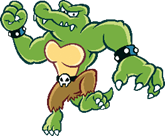
Reptiles from exotic lands, typically associated with the Kremling Krew – an amoral band of pirates and thugs.
Though there are exceptions. Despite their rough edges, they're confident, versatile adventurers, and are surprisingly industrious.+1 Heart, +1 Spirit
1 Power, 0 DefensePros
+ Athletics (Brawn)
or + Athletics (Jump)
or + Athletics (Swim)
+ Crafts (Gadgets)
or + Knowhow (Gadgets)
+ Bully (Threats)
Immune (Charm)
AquaticCons
Weakness (Ice)
You take +2 damage and become Dazed (1) for a number of turns equal to the damage taken.
Weakness (Provoke)
The Level and Duration of any Provocation inflicted on you is doubled.Tech Defaults
Aerial
Launch
Strong
ToolExample Techniques
Wind-Up Punch (0 FP)
Readies a powerful right-hook, then launches it at the end of the next turn. You can't act during the turn you're winding up.
Coordination:
Auto: 5 DMG
Nice!: 10 DMG
Strong x4, Delayed, ExhaustingBlunderbuss (3 FP)
Fires a heavy Kannonball from a blunderbuss, which barrels through the target to hit two targets behind them, too.
Aim:
Nice!: 3 DMG / 2 DMG / 1 DMG
Good!: 6 DMG / 5 DMG / 4 DMG
Strong x2, Strike-Through x2, Tool (Ranged), Unwieldy
Lakitu
Lakitu are offshoots of Koopas known for their partnership with the clouds. While they can walk around like a normal Koopa they rarely leave their clouds, preferring to attack from above.
+2 Spirit
1 Power, 0 DefensePros
+ Aim (Throw)
+ Knowhow (Weather)
+ Trickery (Dodge)
1 Resist (Ice, Shock, Water)
Carrier
Fly
HoverCons
Weakness (Air)
You must make a Steady check versus Disorientation (1), lasting a number of turns equal to the damage taken (minimum 1 turn).Tech Defaults
Boost (Dodge)
Minion (Spiny)
Ranged
Terrain (Weather)Example Techniques
Spiny Toss (0 FP)
Tosses a Spiny Egg at the foe.
Aim (+ Throw):
Auto: 1 DMG
Nice!: 2 DMG
RangedCloud Nine (3 FP)
Hides the target away in the user's cloud, making it easier for them to Dodge for 4 turns.
Cheer:
Nice!: +1d6 to Dodge for 4 turns
Good!: +2d6 to Dodge for 4 turns
Great!: +3d6 to Dodge for 4 turns
Wonderful!: +4d6 to Dodge for 4 turns
Boost (Dodge) x4, Harmless

Lantern Ghost
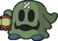
Despite the name, these relatives of Shy Guys are very much alive – they're just creepy. They thrive in dark and secluded places, but are seldom seen without a light to guide them and their allies. They have to take great care not to turn that light on themselves.
+1 Spirit, +1 Courage
1 Power, 0 DefensePros
+ Notice (Dark Places)
+ Trickery (Shadows)
+ Bully (Surprises)
Immune (Fear, Shadow)Cons
Weakness (Sudden Light)
The light blinds you, leaving you Dazed (1) for a number of turns equal to the damage taken (minimum 1).Tech Defaults
Element (Light)
Fear x2
Disorient
SnatchOptional: Element (Light) on indirectt or Ranged attacks
Example Techniques
Flash of Light (0 FP)
Waves a searingly bright lantern in the enemy's face.
Coordination:
Good!: 2 DMG
Bully:
Nice!: Disorient (1) for 2 turns
Good!: Disorient (2) for 2 turns
Disorient x2, Element (Light), Indirect, Commitment (Primary), UnwieldyShadow-Play Spook (4 FP)
Uses the light from their lantern to conjure up vivid shadows, terrifying a group of enemies – causing them to either flee or cower in fear.
Trickery (+ Shadows):
Nice!: Stun (3) for 2 turns
Good!: Stun (4) for 2 turns
Fear x4, Empower x2, Group, Harmless (Indirect), Shorten x3
Magikoopa
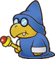
While a Koopa's magic requires study, it's not what you'd call spiritual. It tends to be pragmatic, straightforward, and a little bit weird.
Still, no one can deny they have a knack for it. When a Koopa devotes themselves to magical study they can make for powerful wizards. As long as they can keep a hold of their wands, anyway.+1 Heart, +1 Spirit
1 Power, 0 DefensePros
+ Aim (Magic)
+ Knowhow (Lore)
+ Magic (Boosts)
or + Magic (Shape-Change)
Efficient (Flight, Power-Ups, Shape-Change)Cons
Weakness (Confuse)
The Level and Duration of any Confusion inflicted on you is doubled.Tech Defaults
Boost (Any)
Empower
Tool (Ranged)
Weaken (Any)Example Techniques
Magic Blast (0 FP)
Fires a flashy magic missile at range.
Aim (+ Magic):
Auto: 1 DMG
Nice!: 2 DMG
Tool (Ranged)Cursed Form (6 FP)
Transforms an enemy into a weaker form for 3 turns.
Magic (+ Shape-Change):
Good!: -1 Attack, -1 Defense, for 3 turns
Great!: -2 Attack, -2 Defense, for 3 turns
Wonderful!: -3 Attack, -3 Defense, for 3 turns
Weaken (Attack) x3, Tool (Ranged), Weaken (Defense) x3, Harmless, Unwieldy
Monty Mole
Otherwise known simply as "moles", these stout creatures keep to themselves. When they do venture out of their burrows, it's usually not for very long, and – typically – for selfish, petty reasons.
+2 Heart
1 Power, 0 DefensePros
+ Athletics (Burrow)
+ Aim (Throw)
+ Trickery (Stealth)
Elevation
Requires elevated earth to burrow into.Cons
Weakness (Quake)
Has no effect unless you're currently underground.
If you're currently underground, you're forced to the surface, dealing +2 damage and completely Stunning (6) you for the next turn.Tech Defaults
Aerial
Secure (Burrowed)
Selective
Tool (Ranged)Example Techniques
Debris Toss (0 FP)
Hurls whatever you can find at the foe; if you're lucky, it'll be sharp.
Aim (+ Throw):
Roll 1d6; on a 6, deals more damage.
Nice!: 2 DMG / 6 DMG
Tool (Ranged), Lucky Hit (Strong x2), CommitmentBurrowing Piledriver (3 FP)
Body slams the enemy, then burrows safely underground.
Athletics:
Nice!: 3 DMG
Good!: 6 DMG
Athletics (+ Burrow):
Good!: Secure (1, Burrowed) for 1 turn
Secure, Aerial, Strong x2, Split, Unwieldy x2

Nimbus
Concept by @bigmeatyflaws
Nimbus folk are highly social people weather spirits who live among the clouds. Naturally their fluffy marshmallow-like bodies give them a knack for all things airborne and weather-related, though they also take on some volatility – the weather is hard to predict, after all.+1 Spirit, +1 Courage
1 Power, 0 DefensePros
+ Knowhow (Weather)
or Magic (Weather)
+ Cheer (Encourage)
+ Perform (Appeal)
Immune (Water)
You heal 5 HP instead.
1 Resist (Shock)
You receive the following as a Contact trait, lasting for 1 turn per point of Raw Damage:
The attacker takes 1 Piercing Shock DMG, and you make a Steady check; the attacker is Dazed (1) for 1 turn for each Grade of Success.
Efficient (Elements, Flight, Weather)Cons
Weakness (Air)
You must make a Steady check versus Disorientation, lasting a number of turns equal to the damage taken (minimum 1 turn).
Weakness (Fire, Ice)
You become Dazed (1), lasting a number of turns equal to the damage taken (minimum 1 turn).Tech Defaults
Hearty x2
Ranged
Stun
Terrain (Weather)Optional: Element (Air/Ice/Shock/Water) on Indirect or Ranged Techniques
Example Techniques
Thunderbolt (0 FP)
A barely controlled discharge of electricity.
Aim:
Good!: 4 DMG
Magic (+ Weather):
Nice!: Stun (1) for 1 turn
Good!: Stun (2) for 1 turn
Element (Shock), Ranged, Commitment (Primary), Stun, Strong, UnwieldyRecover Shower (3 FP)
Conjures a light drizzle over an ally to heal them.
Magic (+ Weather):
Nice!: +4 HP
Good!: +5 HP
Great!: +6 HP
Element (Water), Hearty x3, Empower x3, Harmless (Indirect), Others

Ninji
Concept by @tact.elive
Naturally sneaky and fleet-footed, the mysterious Ninji clan have often found their skills in high demand. They excel both as spies and as bodyguards, though sharp as they are, they aren't limited to grunt-work.+1 Heart, +1 Spirit
1 Power, 0 DefensePros
+ Athletics (Jump)
+ Trickery (Dodge)
+ Trickery (Stealth)
1 Resist (Shadow)
Clone (Illusions)
InvisibilityCons
Weakness (Sudden Light)
This Weakness only applies to your clones or while Invisible.
You are stunned by the light, Dazing (1) you for a turn for each point of damage taken (minimum 1 turn).Tech Defaults
Aerial
Ranged
Secure (Invisible)
Variant (Trickery)Example Techniques
Jump Kick (0 FP)
Leaps at the foe from above with one quick strike.
Atheltics (+ Jump):
Auto: 1 DMG
Nice!: 2 DMG
AerialShuriken Barrage (4 FP)
Tosses a flurry of shuriken at the foe, hitting multiple times.
Aim:
Nice!: 2 DMG
Good!: 2 DMG x2
Great!: 2 DMG x3
Wonderful!: 2 DMG x4
Ranged, Strong x3, Unwieldy

Noki
Art by Wolfsam
Nokis are a laidback aquatic people. They're not quite as proactive and prone to action as their land-dwelling brethren; instead, Nokis tend to solve their problems by relying on their tough shells and social graces.+1 Heart, +1 Courage
1 Power, 1 DefensePros
+ Athletics (Swim)
+ Guard (Melee)
+ Persuade (Diplomacy)
1 Resist (Fire, Water)
AquaticCons
Weakness (Aerial, Blast, Quake)
You are flipped over; you retain your Defense against Aerial and Blast attacks initially, but otherwise your Defense is negated for the duration.
This leaves you completely Stunned (6) for the next 2 turns.
Weakness (Shock)
You take +2 damage and become Dazed (1), lasting a number of turns equal to the damage taken.Tech Defaults
Charm
Dismiss
Element (Water)
IndirectOptional: Element (Water) on Indirect or Ranged Techniques or Variant (Athletics - Primary Only) on Indirect attacks
Example Techniques
Shell Spin (0 FP)
Withdraws into their shell, then spins at the enemy. Defense is boosted afterwards.
Athletics:
Nice!: 1 DMG
Good!: 2 DMG
Guard:
Good!: +1 Defense for 1 turn
Indirect, Variant (Athletics), Boost (Defense), Split, Unwieldy x2Plea For Help (3 FP)
Talks an enemy into helping out.
Persuade (+ Diplomacy):
Nice!: Charm (1) for 3 turns
Good!: Charm (2) for 3 turns
Great!: Charm (3) for 3 turns
Charm x3, Ranged, Harmless

Outsider
Concept by @bigmeatyflaws
All manner of Outsiders exist on the fringe of reality, appearing with all sorts of physical differences.
Occasionally, they cross over and explore the Mushroom Kingdom. Outsider adventurers tend to have a knack for getting around in different dimensions.+1 Spirit, +1 Courage
1 Power, 0 DefensePros
+ Knowhow (Dimensions)
+ Magic (Dimensions)
or + Trickery (Dimensions)
+ Persuade (Common Ground)
Intangibility
Invisibility
1 of the following:
1 Resist (Element)
Choose the resisted element during character creation.
Aquatic
Clone (Illusions)
Efficient (Dimensions)
Hover
Latent (Mini Mushroom)
For 5 FP: Activate a Mini Mushroom as a Power-Up, targeting yourself.
MimicryCons
At least 2 of the following:
Weakness (Confuse)
The Level and Duration of any Confusion inflicted on you is doubled.
Weakness (Disorient)
The Level and Duration of any Disorientation inflicted on you is doubled.
Weakness (Provoke)
The Level and Duration of any Provocation inflicted on you is doubled.
Handless
SinkerTech Defaults
Aerial
Swap x2Up to 2 of the following:
Boost (Dodge)
Confuse x2
Disorient
Divider
Hearty x2
Tool
Terrain (Any)
Choose during character creationExample Techniques
Backdoor Boot (0 FP)
Kicks at the foe, knocking them off-balance through a crack in space.
Coordination:
Auto: 1 DMG
Nice!: 2 DMG
Trickery (+ Dimensions):
Nice!: The foe switches positions with an adjacent ally
SwapMagic Window (3 FP)
Disappears into another dimension, then continuously reappears from every angle, bonking the foe over and over.
Athletics:
Deal 1 DMG once for each Grade of Success.
Aerial, Repeat
Pianta
While most Piantas are laidback, their strong social skills and large stature has been known to go to their heads.
But whether you're in a fight or a business deal, it's always good to have a Pianta backing you up.+1 Heart, +1 Courage
1 Power, 0 DefensePros
+ Athletics (Brawn)
+ Bully (Shakedown)
+ Persuade (Deals)
1 Resist (Earth, Shock, Water)Cons
Weakness (Fire)
You take +2 damage and suffer from a Lingering (1) burn, lasting a number of turns equal to the damage taken.Tech Defaults
Flowery
Launch
Strong
ThrowExample Techniques
Brawny Backhand (0 FP)
Smacks the enemy around with brute strength.
Coordination:
Auto: 2 DMG
Nice!: 2 DMG x2
StrongChuckster (4 FP)
Grabs an enemy in melee, then throws them at another target, damaging both targets.
Athletics (+ Brawn):
Nice!: 3 DMG
Good!: 6 DMG
Strong x2, Throw, Unwieldy

Piranha Plant
Vicious beasts and voracious eaters, it's no surprise Piranha Plants are feared as monsters. They rarely even learn to speak, though they're certainly capable. Most of them seem content to live as beasts.
+1 Heart
2 Power, 0 DefensePros
+ Athletics (Burrow)
+ Trickery (Camouflage)
+ Bully (Poison)
Immune (Poison, Water)
You heal 5 HP instead.
Elevation
Requires elevated earth to burrow into.Cons
Weakness (Fire)
You take +2 damage and suffer from a Lingering (1) burn, lasting a number of turns equal to the damage taken.
Weakness (Quake)
Has no effect unless you're currently underground.
If you're currently underground, you're forced to the surface, dealing +2 damage and completely Stunning (6) you for the next turn.Tech Defaults
Lingering
Secure (Burrowed)
Selective
UnderfootExample Techniques
Burrowing Bite (0 FP)
Burrows underground to the target, then bites.
Coordination:
Auto: 2 DMG
Nice!: 4 DMG
SelectiveToxic Fangs (4 FP)
Lashes out in melee with potent toxic.
Coordination:
Auto: 2 DMG
Nice!: 4 DMG
Bully (+ Poison):
Nice!: Lingering (2) for 4 turns
Good!: Lingering (3) for 4 turns
Great!: Lingering (4) for 4 turns
Lingering x4, Empower

Pokey
These curious cacti grow in segments, and need very little to sustain themselves. Although only the head of a Pokey is truly alive, they can integrate and detach segments easily, allowing them to split off individual parts without much risk.
+2 Heart
1 Power, 0 DefensePros
+ Aim (Throw)
+ Athletics (Reach)
+ Steady (Poise)
Immune (Aerial)
This Immunity is negated if the attacker has Immune (Spikes).
Contact The attacker takes 1 Piercing DMG, and you make a Steady check; the attacker is Dazed (1) for 1 turn for each Grade of Success.Cons
Handless
Weakness (Air, Blast)
If you take damage from this attack, you have to make a Good Steady check or be forced into your Detached State.
Weakness (Quake)
Has no effect unless you're currently underground.
If you're currently underground, you're forced to the surface, dealing +2 damage and completely Stunning (6) you for the next turn.Other Traits
State (Detached)
You're able to remove your head from your body and move around as a single segment.
Entering your Detached State is a free action that requires no check, but re-combining requires other segments and a Steady check.
While detached you're smaller and slower, and your body is left completely inert. In addition to the obvious issues, your Guard and most kinds of Athletics (e.g. jumping, running) are Weakened (1); however your Trickery and certain kinds of Athletics (e.g. burrowing) are Boosted (1).
Good!: You recombine, exiting your Detached State.
Great!: You recombine quickly, exiting your Detached State as a free action.Tech Defaults
Lingering x2
Ranged
Piercing
Secure (Burrowed)Example Techniques
Pokey Throw (0 FP)
A lobbing attack made with the Pokey's own segments.
Aim (+ Throw):
Auto: 2 DMG
Nice!: 4 DMG
Ranged, Strong, Situational (Not while Detached)Poison Point (4 FP)
Leaps at and spears the enemy with their pointed head, afflicting them with a poison for 4 turns.
Athletics:
Nice!: 2 Piercing DMG
Good!: 4 Piercing DMG
Bully:
Nice!: Lingering (2) for 4 turns Good!: Lingering (3) for 4 turns
Great!: Lingering (4) for 4 turns
Piercing, Aerial, Empower, Lingering x4, Strong, Unwieldy, Situational (While Detached)

Puff
Puffs are carefree wind spirits who answer to no one – which unfortunately tends to give them unfounded confidence and a penchant for bullying. Still, their mastery over the skies is second to none, and they're quite useful to have around.
+1 Spirit, +1 Courage
1 Power, 0 DefensePros
+ Knowhow (Weather)
+ Notice (From Overhead)
+ Bully (Stun)
Fly
Immune (Water)
You heal 5 HP instead.
1 Resist (Shock)
You receive the following as a Contact trait, lasting for 1 turn per point of Raw Damage:
The attacker takes 1 Piercing Shock DMG, and you make a Steady check; the attacker is Dazed (1) for 1 turn for each Grade of Success.
Clone (Copies, Illusions)Cons
Weakness (Air)
You must make a Steady check versus Disorientation, lasting a number of turns equal to the damage taken (minimum 1 turn).
Weakness (Fire, Ice)
You drift down to earth and become Dazed, lasting a number of turns equal to the damage taken (minimum 1 turn).
HandlessTech Defaults
Indirect
Launch
Stun
Terrain (Weather)Optional: Element (Air/Water) on Indirect or Ranged Techniques, or Element (Shock) on Stun Techniques
Example Techniques
Zip Zap (0 FP)
Bristles with static and collides with the foe.
Coordination:
Nice!: 1 DMG
Good!: 2 DMG
Bully (+ Stun):
Nice!: Stun (1) for 2 turns
Good!: Stun (2) for 2 turns
Great!: Stun (3) for 2 turns
Wonderful!: Stun (4) for 2 turns
Element (Shock), Stun x2, UnwieldyDownpour (4 FP)
Storms over the enemy as far as the wind will carry them.
Coordination:
Nice!: 4 DMG; attacks up to 1 more target behind the first for each additional Grade of Success.
Element (Water), Indirect, Sequential, Strong

Puni
The Punies are small and frail insects who live isolated lives in long forgotten woods. Many scholars believe they're just a myth. However, when they travel abroad, their ability to work in a group makes them stalwart companions.
-1 Heart, +1 Spirit, +1 Courage
0 Power, 0 DefensePros
+ Notice (Details)
+ Trickery (Dodge)
or + Trickery (Stealth)
+ Cheer (Cooperate)Cons
Weakness (Crushing)
You take +2 damage and become Dazed (1), lasting a number of turns equal to the damage dealt.
HandlessTech Defaults
Allies
Boost (Dodge)
Flowery
SelectiveExample Techniques
Underfoot Jab (0 FP)
Meekly strikes at an enemy from underneath, escaping their notice
Nice!: 1 DMG
SelectiveGroup Bouquet (2 FP)
Shares Flower Power with their allies, restoring their FP; not including themselves.
Cheer (+ Cooperate):
Nice!: +1 FP
Good!: +2 FP
Great!: +3 FP
Allies, Flowery x3, Harmless
Puppet
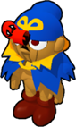
Rarely, the Stars have seen fit to bless inanimate objects with life. Puppets come in many forms, but their connection to the Stars always remains strong. For a Puppet, until their duty's done, all the world's a stage.
+1 Spirit, +1 Courage
1 Power, 1 DefensePros
+ Crafts (Woodwork)
+ Trickery (Camouflage)
+ Perform (Appeal)
Immune (Poison, Stars)
1 Resist (Shock)
Construct (Lifelike)
ResilientCons
Weakness (Blast)
You crumble to the floor and are unable to act, as if you've been KO'd. You retain your HP, and can recover through your Resilient Trait.
Weakness (Fire)
You take +2 damage and suffer from a Lingering burn, lasting a number of turns equal to the damage taken.Tech Defaults
Boost (Any)
Tool (Built-In)
Variant (Perform)+ 1x Custom Set of Traits
Custom Sets are defined during character creation. For Puppets, they can include any Traits totalling no more than 2 FP, can include Tool (Built-In) for no additional FP cost, and can't include negative Traits.Example Techniques
Hand Gun (0 FP)
(Custom Trait: Strong)
Blasts the enemy with a built-in popgun.
Aim:
Auto: 2 DMG
Nice!: 4 DMG
Strong, Tool (Ranged)Inspired Performance (3 FP)
Inspires their allies to put on a grand show.
Cheer (+ Cooperate):
Nice!: +1d6 Perform for 3 turns
Good!: +2d6 Perform for 3 turns
Great!: +3d6 Perform for 3 turns
Boost (Perform) x3, Allies, Harmless
Raven
These mysterious birds are fast on their feet and from a quiet, contemplative life observing others, become quite knowledgeable in their fields. They tend to keep to themselves (unless they want something), and rarely speak unless they have something important to say.
+2 Spirit
1 Power, 0 DefensePros
+ Athletics (Climb)
+ Knowhow (Any)
+ Trickery (Dodge)Cons
HandlessTech Defaults
Aerial
Boost (Attack)
Overrun
SnatchExample Techniques
Jump Squat (0 FP)
Leaps at an enemy and attempts to flatten them with a surprisingly heavy slam.
Athletics:
Good!: 4 DMG
Bully:
Good!: -1d6 Coordination for 2 turns
Great!: -2d6 Coordination for 2 turns
Aerial, Strong, Weaken (Coordination) x2, Commitment (Primary), Unwieldy x2Sage's Wisdom (3 FP)
Advises their allies on the best way to fight their opponents.
Knowhow (+ Battle):
Nice!: +1 Attack for 3 turns
Good!: +2 Attack for 3 turns
Great!: +3 Attack for 3 turns
Boost (Attack) x3, Allies, Harmless

Rex
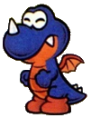
Rexes are short-tempered dinosaurs from distant lands, with extremely flexible bodies that can scrunch up and stretch out like an accordion. That and their vestigial wings continue to baffle modern scholars, though they seem to be a distant relative to dragon-kind.
+1 Heart, +1 Courage
1 Power, 0 DefensePros
+ Athletics (Run)
+ Athletics (Scrunch)
or + Steady (Scrunch)
+ Bully (Burns)
1 Resist (Fire)
Carrier (Un-Scrunched)Cons
Weakness (Aerial)
You retain your Defense, but if you take damage from this attack, you are forced into your Scrunched State.Other Traits
State (Scrunched)
You can scrunch your body into a smaller state, or return to normal size, with Athletics or Steady.
This lowers your defenses, Weakening Guard and Steady. But you also become smaller and faster, Boosting relevant Athletics and Trickery checks.
Good!: You enter/exit your Scrunched State.
Great!: You enter/exit your Scrunched State as a free action.Tech Defaults
Element (Fire), Ranged
Launch
Overrun
SpilloverExample Techniques
Headlong Charge (0 FP)
Rushes in to strike all enemies in sight.
Coordination:
Nice!: 2 DMG
Good!: 4 DMG
Overrun, Strong, UnwieldyFire Breath (3 FP)
A mighty gout of flame from deep within; it leaves them exhausted for a turn after use.
Aim:
Nice!: 4 Fire DMG
Good!: 8 Fire DMG
Bully (+ Burns):
Good!: Lingering (1) for 3 turns
Great!: Lingering (2) for 3 turns
Wonderful!: Lingering (3) for 3 turns
Element (Fire), Ranged, Strong x4, Lingering x3, Exhausting, Unwieldy x2
Scuttlebug
A variety of spider-like creatures, collectively referred to as "Scuttlebugs" – though depending on the region, Piders, Arantulas or Skeeters may be better known.
In any case, they share the same skittish and reclusive tendencies.+2 Spirit
1 Power, 0 DefensePros
+ Athletics (Climb)
+ Crafts (Web)
+ Notice (Tremors)
Elevation
Requires an elevated position to attach a web. Can use Crafts in place of Athletics.Cons
HandlessTech Defaults
Aerial
Daze x2
Ranged
Variant (Crafts)Example Techniques
Web-Launch (0 FP)
Fires a series of clumped up balls of webbing from the mouth.
Aim:
Nice!: 1 DMG
Good!: 1 DMG x2
Great!: 1 DMG x3
Wonderful!: 1 DMG x4
Ranged, Strong, UnwieldyWeb Net (4 FP)
Casts a net of webbing over the enemy group, attempting to tangle them up.
Crafts:
Nice!: Daze (1) for 4 turns
Good!: Daze (2) for 4 turns
Great!: Daze (3) for 4 turns
Wonderful!: Daze (4) for 4 turns
Daze x4, Group, Variant (Crafts), Harmless (Indirect)

Shaman
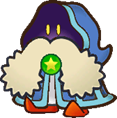
While the common people refer to them as Shamans, this tribe are mysterious magicians, drawing power from the Stars themselves. Mystifying though they may be, they're generally good-natured.
+2 Spirit
1 Power, 0 DefensePros
+ Knowhow (Lore)
+ Magic (Oracle)
+ Magic (Status Buffs)
Efficient (Buffs, Enchantments, Fortune Telling)Cons
Weakness (Confuse)
The Level and Duration of any Confusion inflicted on you is doubled.Tech Defaults
Boost (Any)
confuse x2
Daze x2
RangedExample Techniques
Migraine Missile (0 FP)
Shoots the foe with a magic blast that induces a headache, Confusing them for 2 turns.
Aim:
Nice!: 1 DMG
Good!: 2 DMG
Magic:
Nice!: Confuse (1) for 2 turns
Good!: Confuse (2) for 2 turns
Great!: Confuse (3) for 2 turns
Wonderful!: Confuse (4) for 2 turns
Confuse x4, Ranged, Shorten x2, UnwieldyPower Drain (5 FP)
Steals power from an enemy, lowering their Attack and boosting another target's, for 2 turns.
Magic (+ Status Buffs):
Great!: +1/-1 Attack for 2 turns
Wonderful!: +2/-2 Attack for 2 turns
Excellent!: +3/-3 Attack for 2 turns
Boost (Attack) x3, Weaken (Attack) x3, Ranged, Shorten, Split, Harmless, Unwieldy x2
Shy Guy
Shy Guys are mysterious, childlike tricksters. While they tend to be selfish and scatterbrained, they have been known to rally together, and prove to be capable craftsmen – although it's usually for selfish causes.
+1 Spirit, +1 Courage
1 Power, 0 DefensePros
+ Crafts (Jury-Rig)
+ Trickery (Bluff)
+ Cheer (Athletics)
Immune (Charm, Provoke)Cons
Weakness (Fear)
The Level and Duration of all Statuses you suffer associated with fear are doubled.Tech Defaults
Aerial
Disarm x2
Snatch
Variant (Trickery)Example Techniques
Acrobatics (0 FP)
Flips onto the enemy, with a chance to hit critically with a foot flurry.
Athletics:
Roll 1d6:
- 1-5:
Nice!: 1 DMG
Good!: 2 DMG- 6:
Nice!: 1 DMG
Good!: 2 DMG
Great!: 2 DMG x2
Wonderful!: 2 DMG x3Aerial, Lucky Hit (Strong x2), Unwieldy
Snatch Run (4 FP)
Runs past grounded targets and attempts to steal their Tools, taking it off the enemy and Disarming them.
Trickery:
Nice!: Disarm Tool (3) for 3 turns
Good!: Disarm Tool (4) for 3 turns
Great!: Disarm Tool (5) for 3 turns
Wonderful!: Disarm Tool (6) for 3 turns
Disarm (Tool) x6, Auto x2, Overrun, Harmless, Shorten x3
Smorg
Smorgs are artificial lifeforms with shady origins, though most attribute them to X-Naut experiments. They can propagate at alarming rates if left unchecked, collecting into dangerous groups. Each individual Smorg in the hive works together to take on complex shapes.
+2 Heart
1 Power, 0 DefensePros
+ Athletics (Grapple)
+ Trickery (Mimicry)
+ Steady (Clone)
Immune (Charm)
Clone (Copies)
Mimicry
You can use Athletics, Trickery or Steady for Mimicry checks, but not Magic.Cons
Weakness (Air, Blast)
You take +2 damage and become Disoriented (1) as individual Smorgs are thrown out from the group, lasting a number of turns equal to the damage taken. You can't take on or maintain shapes with Mimicry while Disoriented by this effect.
Weakness (Confuse, Fear)
The Level and Duration of all Statuses you suffer associated with confusion or fear are doubled.
HandlessTech Defaults
Indirect
Minion (Smorg)
Reach
StunExample Techniques
Smorg Stomp (0 FP)
A single (disposable) Smorg launches through the air at a target.
Athletics:
Nice!: 2 DMG
Indirect, Aerial, Commitment (Primary)Miasma Sweep (3 FP)
A large bundle of Smorgs group into a claw, then swipe! The claw is able to strike at a row of enemies simultaneously, aiming high or low.
Coordination:
Good!: 6 DMG
Indirect, Overrun, Reach, Strong x2, Commitment (Primary), Unwieldy

Snifit
Snifits are similar in many ways to Shy Guys, save for their large masked snout. They're not as good at working together and are often more selfish than Shy Guys, but are more cunning and self-reliant as a result.
+2 Spirit
1 Power, 0 DefensePros
+ Aim (Shoot)
+ Notice (Scent)
+ Trickery (Bluff)
Immune (Fumes)Cons
N/ATech Defaults
Disarm
Launch
Ranged
Variant (Trickery)Example Techniques
Bullet Barrage (0 FP)
Fires a volley of bullets from their snout.
Aim (+ Shoot):
Nice!: 1 DMG
Good!: 1 DMG x2
Great!: 1 DMG x3
Wonderful!: 1 DMG x4
Ranged, Strong, UnwieldyCannonball (5 FP)
Blasts a large single-shot cannonball from their snout, hitting up to 4 targets one-by-one.
Strikes get weaker after each target.
Aim (+ Shoot):
Nice!: 3 DMG / 2 DMG / 1 DMG / 1 DMG
Good!: 6 DMG / 5 DMG / 4 DMG / 3 DMG
Ranged, Strong x2, Strike-Through x3, Unwieldy

Siren
These strange spirits come in many varieties, though as rare as they are it's hard to tell what they are exactly.
They're largely gifted with magic of the elements, though given how flighty they are, what they'll choose to do with it is difficult to predict.+2 Spirit
1 Power, 0 DefensePros
"Element": Any
Element must be specified during character creation.
If a Siren gains an Elemental subspecies (e.g. Breezy), their element must match that subspecies.
+ Magic ("Element")
+ Magic (Illusion)
+ Bully ("Element")
1 Resist ("Element")
Efficient (Curses, De-Buffs, "Element", Illusions)
Fly
HoverCons
Weakness (Opposing Elements)
You take +2 damage and become Dazed (1) for a number of turns equal to the damage taken.
Your Opposing Elements are defined at the same time as your Element.Tech Defaults
Empower
Ranged
Weaken (Any)Optional: Element ("Element") on any Technique
+ 1x Custom Set of Traits
Custom Sets are defined during character creation. For Sirens, they can include any Traits totalling no more than 2 FP, must include Element ("Element") (for no additional FP cost), and can't include negative Traits.Example Techniques
Burning Fist (0 FP)
Smacks the enemy with a fiery punch, burning them in the process.
(Element: Fire, Custom Traits: Lingering x2)
Coordination:
Nice!: 1 DMG
Good!: 2 DMG
Bully (+ Fire):
Nice!: Lingering (1) for 4 turns
Good!: Lingering (2) for 4 turns
Great!: Lingering (3) for 4 turns
Wonderful!: Lingering (4) for 4 turns
Element (Fire), Lingering x4, UnwieldyHurricane (3 FP)
Blasts the enemy, pushing them into the targets behind them.
(Element: Air, Custom Traits: Launch)
Magic (+ Air):
Nice!: 2 DMG
Good!: 4 DMG
Bully (+ Air):
For each Grade of Success, the target is launched into an enemy behind them, dealing 2 DMG.
Element (Air), Launch, Indirect, Strong, Variant (Magic), Unwieldy

Spinia
Strange creatures composed of thin, springy boards.
After they wind themselves up they can spin around at high speeds, but have a difficult time with fine movement.+1 Heart, +1 Spirit
1 Power, 0 DefensePros
+ Athletics (Spin)
+ Trickery (Dodge)
+ Steady (Poise)
Immune (Dizzying)Cons
Weakness (Crushing)
The Level and Duration of all Statuses you suffer from these attacks are doubled.
HandlessTech Defaults
Confuse x2
Counter
Disorient
OverrunOptional: Variant (Athletics) on melee and Disorient Techniques
Example Techniques
Quick Spin (0 FP)
Whirls straight into the foe!
Athletics (+ Spin):
Auto: 1 DMG
Nice!: 2 DMG
Variant (Athletics)Dizzy Blits (4 FP)
Runs circles around grounded foes while colliding with them, leaving them dizzy for a short time.
Athletics (+ Spin):
Good!: 4 DMG
Athletics (+ Spin):
Nice!: Disorient (1) for 1 turn
Good!: Disorient (2) for 1 turn
Great!: Disorient (3) for 1 turn
Wonderful!: Disorient (4) for 1 turn
Disorient x4, Variant (Athletics) x2, Overrun, Strong, Commitment (Primary), Unwieldy, Shorten x3
Spirit
These great balls of elemental energy vary based on their element – Shock Spirits (like Hotheads) tend to be alert and peppy, with their young being notoriously hard to handle. However, Ice Spirits (like Freezies) are usually cool and indifferent, to the point of appearing lifeless.
+1 Spirit, +1 Courage
1 Power, 0 DefensePros
"Element": Any
Element must be specified during character creation.
If a Spirit gains an Elemental subspecies (e.g. Aeromental), their element must match that subspecies.
+ Notice (Environment)
Environment must be specified during character creation.
+ Bully ("Element")
or + Steady (Counter)
+ Cheer (Charge Up)
Immune ("Element")
You recover HP equal to the attack's raw damage (minimum 1 HP).
If there's any excess HP, your Attack is Boosted for a number of turns equal to the excess HP.Cons
Weakness (Opposing Element)
You take double damage. If this Technique wouldn't usually deal damage, it deals 2 Piercing damage.
Your Attack is Weakened (1) for a number of turns equal to the damage taken.
Your Opposing Elements are defined at the same time as your Element.
HandlessOther Traits
Up to 2 of the following:
1 Resist (Other Element)
This Element must be specified during character creation. This can be chosen twice with two different elements.
Aquatic
Contact
The attacker takes 1 Piercing DMG of your element, and you make a Steady check; the attacker is Dazed (1) for 1 turn for each Grade of Success.
Fly
HoverTech Defaults
Boost (Any)
Optional: Element ("Element") on any Technique
Up to 3 of the following:
Counter
Daze x2
Disorient
Lingering x2
Overrun
Piercing
Quake
Stun
Tutor
UnderfootExample Techniques
Piercing Charge (0 FP)
Rushes the enemy with a full-body tackle, electrifying their defenses.
(Element: Shock, Chosen Trait: Piercing)
Coordination:
Auto: 1 Piercing DMG
Nice!: 2 Piercing DMG
Element (Shock), PiercingFire Up (3 FP)
Empowers the target with burning passion, firing up their attacks.
(Element: Fire, Chosen Trait: N/A)
Cheer (+ Charge Up):
Nice!: +1 Attack and Fire DMG for 5 turns
Good!: +2 Attack and Fire DMG for 5 turns
Great!: +3 Attack and Fire DMG for 5 turns
Boost (Attack) x3, Element (Fire), Lengthen x2, Harmless
Squeek
Squeeks are crafty little mice. Their keen noses and beady little eyes lead many to lives of crime, but their small stature and their potent senses keep them from getting into any serious trouble.
+1 Spirit, +1 Courage
1 Power, 0 DefensePros
+ Notice (Scent)
+ Trickery (Stealth or Theft)
+ Persuade (Smooth Talk)
Immune (Charm)Cons
Weakness (Scent)
The Level and Duration of all Statuses you suffer from scent-based sources are doubled.Tech Defaults
Confuse x2
Piercing
Snatch Variant (Trickery)Example Techniques
Tricky Slap (0 FP)
Slaps an enemy, ignoring defense.
Coordination:
Auto: 1 Piercing DMG
Nice!: 1 Piercing DMG x2
PiercingTricky Thief (0 FP)
Steals an item from the target.
Trickery (+Theft):
Choose one option based on your Grades of Success.
Nice!: 1d6 Coins, +1d6 per Grade of Success
Nice!: A small Item
Good!: A large Item
Great!: An equipped Item
Snatch, Empower, Harmless

Star
The Stars live high above the land, gazing down fondly upon all its inhabitants. While the most powerful have a responsibility to look over the world, individual Stars occasionally seek to adventure across it themselves.
While their magic is potent, it's most powerful when used to grant wishes to others.+2 Courage or +1 Spirit, +1 Courage
1 Power, 0 DefensePros
+ Magic (Wishes)
+ Cheer (Wishes)
+ Perform (Appeal)
Immune (Star)
You recover HP equal to the attack's raw damage (minimum 1 HP).
If there's any excess HP, your Defense is Boosted (1) for a number of turns equal to the excess HP.
Efficient (Wishes)
Fly
HoverCons
Weakness (Shadow)
You take double damage. If this Technique wouldn't usually deal damage, it deals 2 Piercing damage.
Your Defense is Weakened (1) for a number of turns equal to the damage taken.Tech Defaults
Aerial
Boost (Any)
Dismiss
FloweryOptional: Element (Light) or Element (Star) on any Technique
Example Techniques
Star Dive (0 FP)
Dives at the enemy from above.(Normal Attack):
Coordination:
Auto: 1 Star DMG
Nice!: 2 Star DMG(Plummeting Attack):
Coordination:
Auto: 2 Star DMG
Nice!: 4 Star DMG
Aerial, Element (Star)Empower (2 FP)
Grants an ally's wish to be strong with the blessing of the stars.
Cheer (+ Wishes):
Nice!: +1 Attack for 4 turns
Good!: +2 Attack for 4 turns
Great!: +3 Attack for 4 turns
Wonderful!: +4 Attack for 4 turns
Boost (Attack) x4, Element (Star), Others, Harmless

Swooper
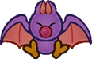
Swoopers, or "Swoops", are lonesome shadowy creatures. Their signature swooping motion gives them an edge when diving on foes from above – all the better to snack on their health.
+2 Spirit
1 Power, 0 DefensePros
+ Coordination (Swoop)
+ Notice (Dark Places)
+ Steady (Poise)
Immune (Charm)
1 Resist (Poison, Shadow)
FlyCons
Weakness (Air)
You must make a Steady check versus Disorientation, lasting a number of turns equal to the damage taken (mimimum 1 turn).
Weakness (Sudden Light)
You are stunned by the light, Dazing you for a turn for each point of damage taken (minimum 1 turn).
HandlessTech Defaults
Aerial
Drain x2
Lingering x2
PiercingExample Techniques
Swoop (0 FP)
Swoops at the enemy from overhead.(Normal Attack):
Coordination:
Auto: 1 DMG
Nice!: 2 DMG(Plummeting Attack):
Coordination:
Auto: 2 DMG
Nice!: 4 DMG
AerialLeech Life (1 FP)
Drains the enemy's life while poisoning them.
Aim:
Nice!: 2 DMG
Good!: 4 DMG
Restore HP equal to the damage dealt, to a maximum of 4 HP.
Bully:
Good!: Lingering (1) for 3 turns
Great!: Lingering (2) for 3 turns
Wonderful!: Lingering (3) for 3 turns
Drain x2, Strong, Lingering x3, Unwieldy x2
Thwomp
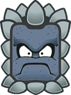
Thwomps are menacing brutes, designed as autonomous traps. They live for the simple pleasure of crashing into walls, floors and anything that gets in their way. There are even more deadly varieties, too, which get Bulkier and Spinier.
+2 Heart
1 Power, 1 DefensePros
+ Athletics (Crash)
+ Trickery (Camouflage)
+ Bully (Shove)
Immune (Poison)
1 Resist (Earth, Fire, Ice, Shock)
Carrier
Construct
Fly
SinkerCons
Weakness (Blast)
Your tough veneer is chipped; your Guard is Weakened for a number of turns equal to the damage taken. Your Defense is negated for the duration.
Weakness (Provoke)
The Level and Duration of any Provocation inflicted on you is doubled.
HandlessTech Defaults
Aerial (Plummet Only), Strong
Counter
Overrun
QuakeExample Techniques
THWOMP (0 FP)
SLAMS onto the enemy from above.
Athletics (+ Crash):
Nice!: 3 DMG
Good!: 6 DMG
Can only be used while flying. You stop flying afterwards.
Aerial (Plummet Only), StrongSideways THWOMP (3 FP)
SLAMS sideways, hurtling towards as many enemies as possible. Athletics (+ Crash):
Nice!: 3 DMG
Good!: 6 DMG
Overrun, Strong x2, Variant (Athletics), Unwieldy
Toad
While the average Toad is passive to a fault, when driven to action they make for stalwart companions and devoted team players. Though as common as they are, the world is full of exceptions.
+2 Courage, +1 Heart, +1 Courage
1 Power, 0 DefensePros
+ Heal (Mushrooms)
+ Perform (Appeal)
+ Persuade (Schmooze)
+ ½ Mushroom effectiveness (for Items, as user or target)Cons
Weakness (Fear)
The Level and Duration of all Statuses you suffer associated with fear are doubled.Tech Defaults
Drain x2
Hearty x2
Shared
ToolOptional: Split on Hearty Techniques
Example Techniques
Drain Punch (0 FP)
Strike the foe and drain their health.
Coordination:
Auto: 1 DMG
Nice!: 2 DMG
Restore HP equal to the damage dealt, to a maximum of 4 HP.
Drain x2Mushroom Feast (4 FP)
Heals up to two targets with delicious mushrooms.
Heal (+ Mushrooms):
Nice!: +4 HP
Good!: +5 HP
Great!: +6 HP
Hearty x3, Empower x3, Split, Harmless (Indirect)
Ukiki
A kind of agile monkey, distinguished from typical Kongs by their mischievous and selfish demeanour. Despite this they're quick and nimble, and their wits can prove useful – when they behave.
+1 Spirit, +1 Courage
1 Power, 0 DefensePros
+ Athletics (Climb)
+ Trickery (Theft)
+ Steady (Poise)
Immune (Charm)Cons
Weakness (Fear)
The Level and Duration of all Statuses you suffer associated with fear are doubled.Tech Defaults
Aerial
Disarm x2
Snatch
ToolExample Techniques
Seed Spitter (0 FP)
Fires a volley of watermelon seeds from their mouth. Requires a steady supply of melons for the greedy monkey.
Aim:
Nice!: 1 DMG
Good!: 1 DMG x2
Great!: 1 DMG x3
Wonderful!: 1 DMG x4
Tool (Ranged), Strong, UnwieldyGimme Gimme! (4 FP)
Brazenly rushes at the foe, clawing their prized Tools out from their hands – at least for a while.
Trickery (+ Theft):
Nice!: Disarm Tool (4) for 3 turns
Good!: Disarm Tool (5) for 3 turns
Great!: Disarm Tool (6) for 3 turns
Disarm (Tool) x6, Empower x3, Harmless, Shorten x3

Whomp
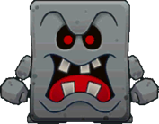
Whomps were constructed to be the perfect guards; with single-minded devotion and resilient bodies.
However, their design has one major shortcoming – their stubby limbs struggle to get back up. Still, they make reliable shields in battle.+1 Heart
1 Power, 2 DefensePros
+ Athletics (Intercept)
+ Guard (Melee)
+ Steady (Poise)
Immune (Poison)
1 Resist (Earth, Fire, Ice, Shock)
Carrier
Construct
SinkerCons
Weakness (Blast, Quake)
You retain your Defense against this attack, but you are flipped over, and your Defense is negated for the duration.
This leaves you completely Stunned (6) for 2 turns.
Weakness (Provoke)
The Level and Duration of any Provocation inflicted on you is doubled.Tech Defaults
Boost (Defense)
Quake
Strong
CounterExample Techniques
WHOMP Tremor (0 FP)
SLAMS into the ground, causing tremors that deal Piercing damage to all enemies in contact with the ground, wall or ceiling.
Athletics:
Good!: 1 Piercing Earth Quake DMG
Great!: 2 Piercing Earth Quake DMG
Quake, Piercing, Unwieldy x2Readied Domino (3 FP)
Rocks back and forth, getting ready to SLAM onto enemies that attack in melee.
Steady (+ Poise):
Gain Contact Trait for 1 turn for each Grade of Success, with the following effect:
Nice!: 6 DMG
Counter, Strong x2, Self
Wiggler
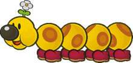
Wigglers are jovial creatures of the forest, and generally pleasant to be around – most of the time. When aggravated, these gentle giants become terrifying beasts, and their retribution is terrible.
+1 Heart, +1 Courage
1 Power, 0 DefensePros
+ Athletics (Run)
+ Cheer (FP)
+ Steady (Poise)
CarrierCons
Weakness (Provoke)
The Level and Duration of any provocation inflicted on you (except from your Berserk State) is doubled.Other Traits
State (Berserk)
You can become infuriated at the drop of a hat, giving you significant advantages while Provoked. With a successful Knowhow action you can even set yourself off, becoming completely Provoked (6) by the nearest enemy target.
When you're dealt damage and aren't Berserk, you immediately become Provoked by the attacker, with a Level and Duration equal to the damage taken.
Going Berserk makes you fearsome in battle, Boosting (1) your Athletics, Bully, Attack and Defense, and negating your Weakness (Damage) Trait.
However, you can't think straight, preventing you from making Notice, Cheer or similar mental checks, and all of your Primary and Secondary Checks receive Unwieldy.
You can still resist and lower Status ailments with Steady – including Provocation.
Good!: You become Provoked (6) for 2 turns.
Great!: You become Provoked (6) for 3 turns, plus 1 more turn for every extra Grade of Success, as a free action.Tech Defaults
Charm
Overrun
Flowery
Scaling, Situational (Berserk)Example Techniques
Singular Stampede (0 FP)
Charges at all grounded enemies, bowling them over.
Athletics (+ Run):
Good!: 1 DMG
Great!: 2 DMG
Wonderful!: 4 DMG
Excellent!: 6 DMG
Overrun, Scaling, Variant (Athletics), Unwieldy x2Berserk Beatdown (3 FP)
Slams the enemy with a wind-up punch, launching them into other enemies. Can only be used while Berserk; stats are recorded assuming a Berserk State and include Attack boosts.
Coordination:
Auto: 2 DMG / 2 DMG
Nice!: 3 DMG / 2 DMG
Good!: 5 DMG / 3 DMG
Great!: 7 DMG / 4 DMG
Athletics (+ Berserk):
For each Grade of Success, the target is launched into an enemy behind them; the damage they take is recorded as the weaker value above.
Scaling, Situational (Berserk), Launch
Wizzerd
Bizarre cyborgs from a long-gone age, with a knack for the mystic arts. Most have long since forgotten their origin, and fewer still are left that could talk about it.
They have a surprising degree of utility, but unlike true machines, are vulnerable to illness, poison and the like.+1 Heart, +1 Spirit
1 Power, 1 DefensePros
+ Coordination (Multi-Handed)
+ Craft (Gadgets)
or + Knowhow (Lore)
+ Magic (Shock)
Clone (Illusions)
Construct (Lifelike)
HoverCons
Weakness (Shock, Water)
Shock attacks and Water Techniques deal +2 damage, and force you to make a Steady check versus Confusion (1), lasting a number of turns equal to the damage taken (minimum 1 turn).Tech Defaults
Boost (Any)
Confuse x2
Ranged
RepeatOptional: Element (Shock) on Ranged attacks
Example Techniques
Punch Rush (0 FP)
A rapid flurry from multiple hands.
Coordination (+ Multi-Handed):
Deal 1 DMG once for each Grade of Success.
RepeatCharge Beam (3 FP)
Fires a laser, then uses the remaining static charge to empower the user's attacks.
Aim:
Good!: 4 DMG
Magic (+ Shock):
Nice!: +1 Attack for 2 turns
Good!: +2 Attack for 2 turns
Element (Shock), Ranged, Boost (Attack) x2, Split, Strong, Commitment (Primary), Unwieldy

X-Naut
Mysterious soldiers from outer space – no one can quite agree on what they are, where they came from or even how to pronounce their name. They're firm in their resolve, and skilled with gadgets and chemicals.
+1 Heart, +1 Spirit
1 Power, 0 DefensePros
+ Athletics (Brawn)
+ Crafts (Chemistry)
or + Crafts (Gadgets)
+ Knowhow (Science)Cons
N/ATech Defaults
Boost (Any)
Launch
Weaken (Any)
Variant (Crafts)
Variant (Knowhow)Optional: Variant (Crafts) or Variant (Knowhow) on Boost/Weaken Techniques
Example Techniques
Drop Kick (0 FP)
Leaps at the enemy and kicks with both feet, trying to send them flying.
Coordination:
Nice!: 2 DMG
Good!: 4 DMG
Athletics (+ Brawn):
For each Grade of Success, the target is launched into an enemy behind them, taking 2 DMG.
Launch, Unwieldy, StrongShrink Potion (5 FP)
Concocts a potion and tosses it at an enemy, shrinking them down to size.
Crafts (+ Chemistry):
Nice!: -2 Attack for 4 turns
Good!: -3 Attack for 4 turns
Great!: -4 Attack for 4 turns
Weaken (Attack) x4, Variant (Crafts), Empower, Harmless (Indirect)

Yoshi
Yoshis are affable dinosaurs from distant lands. While they can talk like other species, most never bother to learn how and choose to live simple lives. In any case, when a Yoshi decides to do something, very little can stop them.
+1 Heart, +1 Courage
1 Power, 0 DefensePros
+ Aim (Throw)
+ Athletics (Jump)
or + Athletics (Run)
+ Steady (VS Weaken)
Immune (Fear)
CarrierCons
Weaken (Sleep)
The Level and Duration of all Statuses you suffer associated with sleep are doubled.Tech Defaults
Aerial
Dismiss
Ranged
ThrowExample Techniques
Gulp (0 FP)
Swallow an enemy in melee and spit them out at the next target in line. Both targets take damage.
Coordination:
Auto: 1 DMG
Nice!: 2 DMG
ThrowFlutter Kick (4 FP)
A series of rapid kicks from above.
Athletics:
Auto: 1 DMG
Nice!: 1 DMG x2
Good!: 1 DMG x3
Great!: 1 DMG x4
Wonderful!: 1 DMG x5
Excellent!: 1 DMG x6
Aerial, Strong x2

Yux
Strange artificial beings, originally created by the X-Nauts – though no one can say for sure how many are out in the wild now. With their ability to produce more Yuxes, they're entirely self-sufficient, making them difficult to reason with – but having a couple dozen extra Yux for offense, defense or just to scout around can be quite handy.
+1 Spirit, +1 Courage
1 Power, 0 DefensePros
+ Knowhow (Science)
+ Notice (Many Eyes)
+ Steady (Propagate)
Clone (Copies)
HoverCons
Weakness (Air)
You must make a Steady check versus Disorientation, lasting a number of turns equal to the damage taken (mimimum 1 turn).
HandlessTech Defaults
Minion (Yux)
Piercing
Ranged
Secure (Mini-Yux Barrier)Optional: Element (Shock) on Ranged attacks
Optional: Variant (Steady) on Minion and Secure TechniquesExample Techniques
Yux Laser (0 FP)
Fires a ring-shaped laser to pierce through enemy defenses.
Aim:
Good!: 4 Piercing Shock DMG
Piercing, Element (Shock), Ranged, Strong, Commitment (Primary), UnwieldyYux Colony (3 FP)
Produces a cluster of Mini-Yuxes around the user, which are then able to act next turn.
The user needs a turn to recover before using this Technique again. Steady:
Nice!: 1 Mini-Yux for 4 turns
Good!: 2 Mini-Yuxes for 4 turns
Great!: 3 Mini-Yuxes for 4 turnsMini-Yux (1 HP):
Mini-Laser:
Fired at range. Deals 2 DMG
Hover
Weakness (Air): Same as Yux's Weakness
Minion (Yux) x3, Variant (Steady), Lengthen, Cooldown, Harmless

I hope the Species Compendium has sparked your imagination, and given you some fun ideas of your own!
Art credits for each original character, from left to right, top to bottom:
- Shy Goth, Mr Jacksaw, Tempestro, Gark & Merlucky: LandsharkRAWR
- Snifenson: yossycoin
- Shroobella: Lanashimi
- afan: afanguy
- Prof. Bobbert: unidentified_goose
- Assorted TTYD-style renders: SomeGuyNamedEric